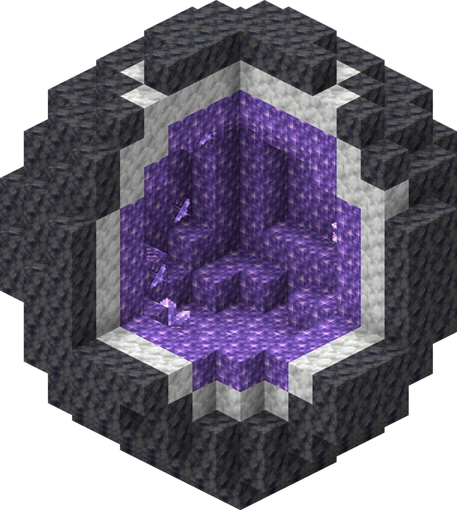

Structures
Structures can generate anywhere in a Minecraft world.Some Structures can have chests full of loot while some have both chests with loot and food or rescourses.
Village
A village is a group or complex of buildings and other structures that generate naturally in the Overworld. A village is inhabited by villagers, cats, iron golems, passive livestock mobs, occasional zombie villagers, and wandering traders with their trader llamas. A village is a source of resources to the player, obtained from trading, chests, and materials found in the village. Villages are also targets of raid attacks by illagers which are villagers who turned bad.
Mineshaft
Usually spawns underground.A maze of corridors supported by wooden beams, with incomplete rail systems on which minecarts with chests can generate. Cave spider spawners may generate here heavily surrounded by cobwebs. In Badlands biomes, they use dark oak planks instead of oak planks, and may generate close to the surface.
Stronghold
Maze-like stone bricks structures containing many rooms, including one with a usually unactivated end portal frame. They have a specific, fixed way of generating, and a maximum of 128 can generate in a single world.[Java Edition only]
Buried Treasure
A single hidden chest containing valuable loot that spawn in beach/shore biomes. They are easily found using treasure maps located in shipwrecks and occasionally ocean ruins.
Desert Temple
Large sandstone buildings containing four loot chests in an underground room hidden beneath terracotta. The chests are trapped with TNT which detonate when the stone pressure plate in the center is stepped on, destroying the chests and their contents.
Igloo
Snow buildings that may have a basement hidden under carpet. The igloo itself contains nothing much of interest, but the basement has a villager and a zombie villager held captive behind iron bars. The splash potion of weakness on the brewing stand, together with the golden apple in the loot chest, can be used to cure the zombie villager.
Jungle Temple
Overgrown cobblestone structures containing two loot chests, with one trapped with two dispensers firing arrows and the other hidden behind a lever puzzle. Setting the correct combination for the lever puzzle moves a block on the main floor, revealing a hidden cavity and the chest.
Pillager outpost
An assortment of structures spawning Pillagers. The main feature of interest is the watchtower: a tall structure built with wood and cobblestone that generates a loot chest on the top floor. Located around the watchtower are up to four small structures, including tents, target scarecrows, and wooden cages sometimes containing an Iron Golem.
Swamp hut
Also known as witch huts, these are small wooden buildings on log stilts containing a cauldron and crafting table. It spawns Witches and, upon generation, one black Cat. The cat and the first witch do not despawn naturally. You can use these witch huts to create a witch farm, as the witches will spawn automatically.
The Woodland Mansions
Massive, systematically-generated buildings constructed with dark oak wood and a cobblestone foundation. They contain many rooms (some hidden) and loot chests in their three floors, and are inhabited by Vindicators and Evokers that do not naturally despawn.
Ruined portal
An incomplete nether portal constructed with various types of stone or blackstone materials when generating in the Overworld or Nether respectively. They can generate in varying sizes and positions. A netherrack platform underneath, as well as a loot chest and a few gold blocks, often generates.
Ocean Ruins
A collection of small structures made of stone bricks or sandstone. Drowned may spawn naturally here.
Shipwrecks
Wooden structures resembling sunken ships in varying states of deterioration. They contain up to three loot chests, and may generate in underwater ravines[Bedrock Edition only].
Ocean Monument
Massive prismarine temples inhabited by guardians, as well as three elder guardians in fixed positions. Wet sponges, along with eight blocks of gold as treasure, also generate naturally here. The interior structure is randomly generated, resembling a maze of sorts.
Nether Fortress
Towering nether brick castles that exclusively contain Blaze spawners and nether wart farms. They are divided into open-air ramparts and winding interior corridors, some of which contain loot chests. Wither Skeletons and Blaze exclusively spawn here.
Bastion Remnant
Enormous, castle-like blackstone structures housing Piglins and piglin brutes. They can generate in various forms (bridges, housing units, Hoglin stables and treasure rooms) and chest spoils vary from one form to the next.
Nether Fossil
Fossil variants that are more incomplete and purely composed of bone blocks.
End City
Sprawling, well-connected towers built from purpur, end stone bricks and Purple Stained Glass. They are inhabited by Shulkers that guard valuable loot chests, and the largest, most meandering cities may generate an end ship holding a pair of elytra.
Dungeon
A small cobblestone room containing a spawner, which spawns Zombies, Skeletons, or Spiders, as well as up to two loot chests. They are typically connected to underground caves but may generate above ground or intersected with true structures such as Mineshafts or Strongholds.
Desert Well
Small sandstone feature holding water in their center cavity. They do not generate gold or treasure as part of their generation but the water can be used as an infinite water source.
Forest rock
Small mossy cobblestone boulders randomly found throughout Giant Tree Taiga, often partially buried.
Amethyst Geode

Large, hollow spherical rocks composed of outer layers of smooth basalt and calcite with an inner layer of amethyst blocks. This is the only place where budding amethyst and amethyst blocks can be found. They come in many sizes, including open geodes and entirely encased geodes.
Fossil
Usually buried feature made of bone blocks and some coal ore.
Iceberg
A feature varying in size, consisting of packed ice and snow blocks, with blue ice on the bottom. Note, not all iceberg-looking terrain in Frozen Ocean Biome are created by feature but as part of the biome itself through Surface Builders.